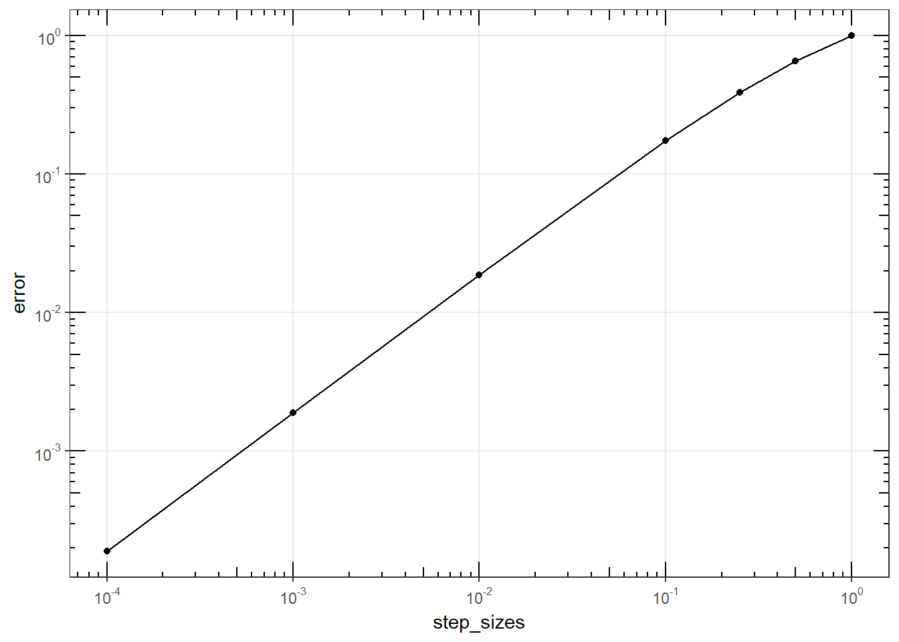
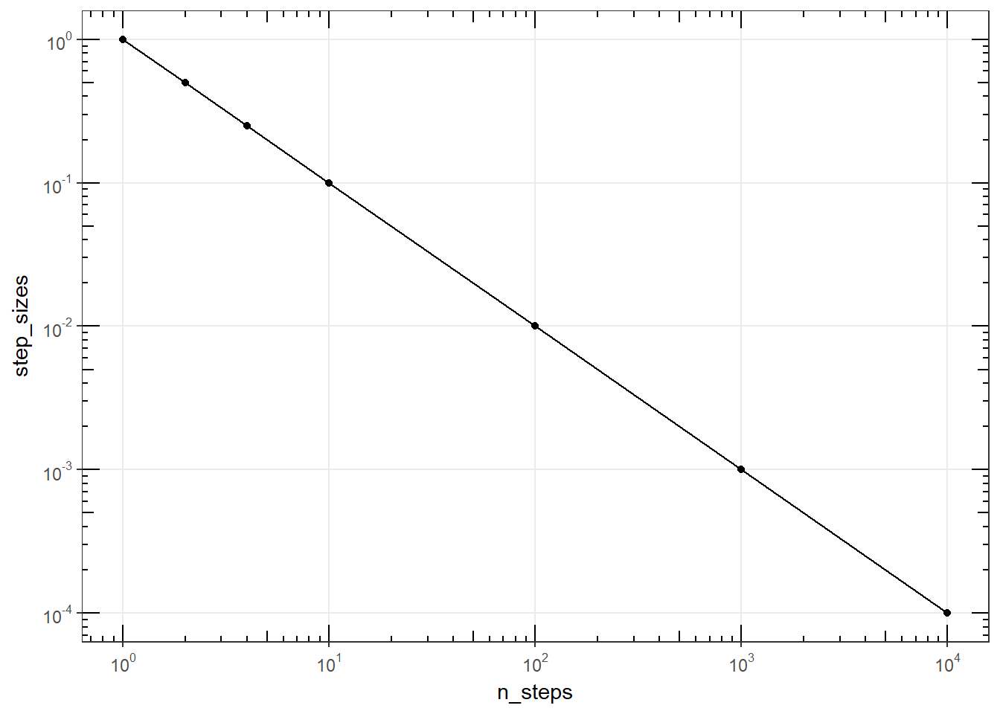

Given the differential equation:
\[ \frac {dy} {dx} = x + y \]
Use the Euler ODE solver to find the error between the exact solution given by:
\[ y(x) = e^e - x - 1\]
at these step sizes: 1, 0.5, 0.25, 0.1, 0.01, 0.001, 0.0001; and plot the the step size versus the error when the \(x = 1\).
library(rODE)
library(ggplot2)
setClass("EulerError", slots = c(
stack = "environment" # environment object inside the class
),
contains = c("ODE")
)
setMethod("initialize", "EulerError", function(.Object, ...) {
.Object@stack$n <- 0 # "n" belongs to the class environment
.Object@state <- vector("numeric", 1)
return(.Object)
})
setMethod("getExactSolution", "EulerError", function(object, t, ...) {
# analytical solution
return(exp(t) - t - 1)
})
setMethod("getState", "EulerError", function(object, ...) {
object@state
})
setMethod("getRate", "EulerError", function(object, state, ...) {
object@rate[1] <- state[1] + state[2] # x + y
object@rate[2] <- 1 # dx/dx
object@stack$n <- object@stack$n + 1 # add 1 to the rate count
object@rate
})
# constructor
EulerError <- function(y) {
.EulerError <- new("EulerError")
.EulerError@state[1] = y # y
.EulerError@state[2] = 0 # x = t
return(.EulerError)
}## [1] "initialize"
## [1] "getExactSolution"
## [1] "getState"
## [1] "getRate"# class implementation
EulerErrorApp <- function(stepSize = 0.1) {
initial_y <- 0
xmax <- 1
stepSize <- stepSize
n_steps <- as.integer((xmax + stepSize / 2) / stepSize)
ode <- EulerError(initial_y)
ode_solver <- Euler(ode)
ode_solver <- setStepSize(ode_solver, stepSize)
steps <- 0
rowVector <- vector("list")
i <- 1
while (steps < n_steps) {
ode_solver <- step(ode_solver)
state <- getState(ode_solver@ode)
steps <- ode_solver@ode@stack$n
rowVector[[i]] <- list(
x = state[2], # x = t
y = state[1], # y
TrueY = getExactSolution(ode_solver@ode, state[2]),
steps = steps)
i <- i + 1
}
data.table::rbindlist(rowVector)
}# get the error at the last row of the dataframe
df <- EulerErrorApp(stepSize = 0.1)
last_row <- df[nrow(df),]
error <- (last_row$TrueY - last_row$y) / last_row$TrueY
# function that gets the error for different step sizes
get_error <- function(stepSize) {
df <- EulerErrorApp(stepSize)
last_row <- df[nrow(df),]
error <- (last_row$TrueY - last_row$y) / last_row$TrueY
c(step = stepSize, error = error, n_steps = last_row$steps)
}
step_sizes <- c(1, 0.5, 0.25, 0.1, 0.01, 0.001, 0.0001)
errors <- data.frame(t(sapply(step_sizes, get_error)))
errors## step error n_steps
## 1 1.0000 1.0000000000 1
## 2 0.5000 0.6519472022 2
## 3 0.2500 0.3854692789 4
## 4 0.1000 0.1733851024 10
## 5 0.0100 0.0187502990 100
## 6 0.0010 0.0018904783 1000
## 7 0.0001 0.0001892038 10000a <- ggplot(errors, aes(step_sizes, error)) +
geom_point(na.rm = TRUE) +
geom_line()+
scale_x_log10(
breaks = scales::trans_breaks("log10", function(x) 10^x),
labels = scales::trans_format("log10", scales::math_format(10^.x))
) +
scale_y_log10(
breaks = scales::trans_breaks("log10", function(x) 10^x),
labels = scales::trans_format("log10", scales::math_format(10^.x))
) +
theme_bw()
a + annotation_logticks(sides = "lrbt") +
theme(panel.grid.minor = element_blank()) # hide the minor grids
a <- ggplot(errors, aes(n_steps, step_sizes)) +
geom_point(na.rm = TRUE) +
geom_line()+
scale_x_log10(
breaks = scales::trans_breaks("log10", function(x) 10^x),
labels = scales::trans_format("log10", scales::math_format(10^.x))
) +
scale_y_log10(
breaks = scales::trans_breaks("log10", function(x) 10^x),
labels = scales::trans_format("log10", scales::math_format(10^.x))
) +
theme_bw()
a + annotation_logticks(sides = "lrbt") +
theme(panel.grid.minor = element_blank()) # hide the minor grids